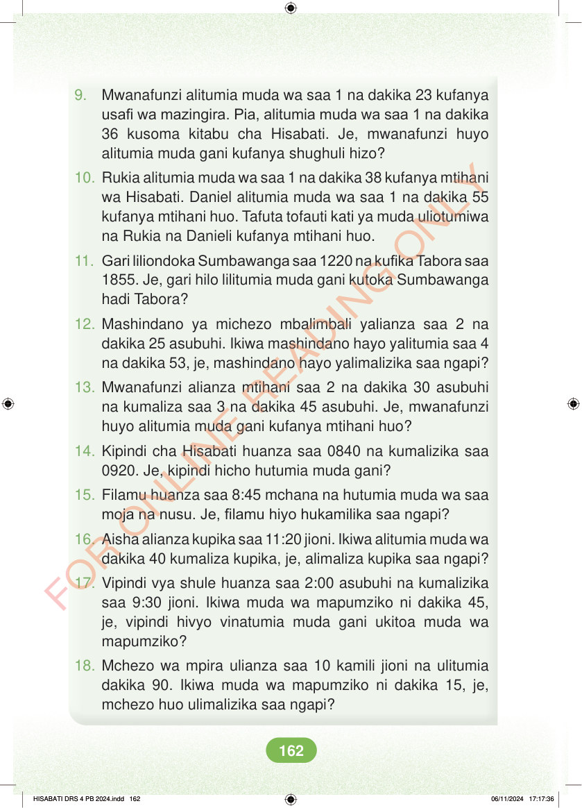

<!DOCTYPE html>
<html lang="sw-TZ"><head><meta charset="utf-8"><meta name="viewport" content="width=device-width,initial-scale=1">
<title>Hisabati: Kitabu cha Mwanafunzi Darasa la Nne</title>
<meta name="title-id" content="pg168_sec001"><meta name="page-section-id" content="176">
<link href="./content/tailwind_output.css" rel="stylesheet"><link href="./assets/libs/fontawesome/css/all.min.css" rel="stylesheet"><link href="./assets/fonts.css" rel="stylesheet">
<style>body{margin:0;background:#eef1ed}main{width:100%;display:flex;justify-content:center;padding:1rem 1rem 5rem;box-sizing:border-box}#content{width:100%;display:flex;justify-content:center}.pdf-page{position:relative;width:min(calc(100vw - 2rem),56rem);aspect-ratio:540.8980102539062/750.6610107421875;background:white;box-shadow:0 4px 24px #0002;overflow:hidden}.pdf-page img{position:absolute;inset:0;width:100%;height:100%;object-fit:fill}</style>
</head><body><main><h1 class="sr-only" id="page-heading">Ukurasa wa 168</h1><div id="content" class="opacity-0"><section role="article" data-section-type="pdf_accessible_page" data-section-id="pg168_sec001" aria-labelledby="page-heading" class="pdf-page"><p class="sr-only" data-id="pg168_gp001_tx001">9. Mwanafunzi alitumia muda wa saa 1 na dakika 23 kufanya usafi wa mazingira. Pia, alitumia muda wa saa 1 na dakika 36 kusoma kitabu cha Hisabati. Je, mwanafunzi huyo alitumia muda gani kufanya shughuli hizo? 10. Rukia alitumia muda wa saa 1 na dakika 38 kufanya mtihani wa Hisabati. Daniel alitumia muda wa saa 1 na dakika 55 kufanya mtihani huo. Tafuta tofauti kati ya muda uliotumiwa na Rukia na Danieli kufanya mtihani huo. 11. Gari liliondoka Sumbawanga saa 1220 na kufika Tabora saa 1855. Je, gari hilo lilitumia muda gani kutoka Sumbawanga hadi Tabora? 12. Mashindano ya michezo mbalimbali yalianza saa 2 na dakika 25 asubuhi. Ikiwa mashindano hayo yalitumia saa 4 na dakika 53, je, mashindano hayo yalimalizika saa ngapi? 13. Mwanafunzi alianza mtihani saa 2 na dakika 30 asubuhi na kumaliza saa 3 na dakika 45 asubuhi. Je, mwanafunzi huyo alitumia muda gani kufanya mtihani huo? 14. Kipindi cha Hisabati huanza saa 0840 na kumalizika saa 0920. Je, kipindi hicho hutumia muda gani? 15. Filamu huanza saa 8:45 mchana na hutumia muda wa saa moja na nusu. Je, filamu hiyo hukamilika saa ngapi? 16. Aisha alianza kupika saa 11:20 jioni. Ikiwa alitumia muda wa dakika 40 kumaliza kupika, je, alimaliza kupika saa ngapi? 17. Vipindi vya shule huanza saa 2:00 asubuhi na kumalizika saa 9:30 jioni. Ikiwa muda wa mapumziko ni dakika 45, je, vipindi hivyo vinatumia muda gani ukitoa muda wa mapumziko? 18. Mchezo wa mpira ulianza saa 10 kamili jioni na ulitumia dakika 90. Ikiwa muda wa mapumziko ni dakika 15, je, mchezo huo ulimalizika saa ngapi? HISABATI DRS 4 PB 2024.indd 162 HISABATI DRS 4 PB 2024.indd 162 06/11/2024 17:17:36 06/11/2024 17:17:36</p></section></div></main><div class="relative z-50" id="interface-container"></div><div class="relative z-50" id="nav-container"></div><script src="./assets/offline-preloader.js?v=audiofix-20260824-1"></script><script src="./assets/scorm.js"></script><script src="./assets/base.bundle.local.js?v=audiofix-20260824-1"></script></body></html>